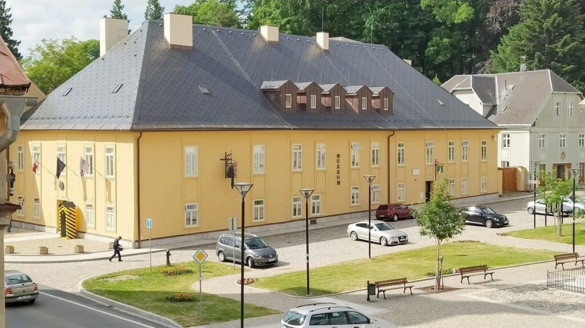
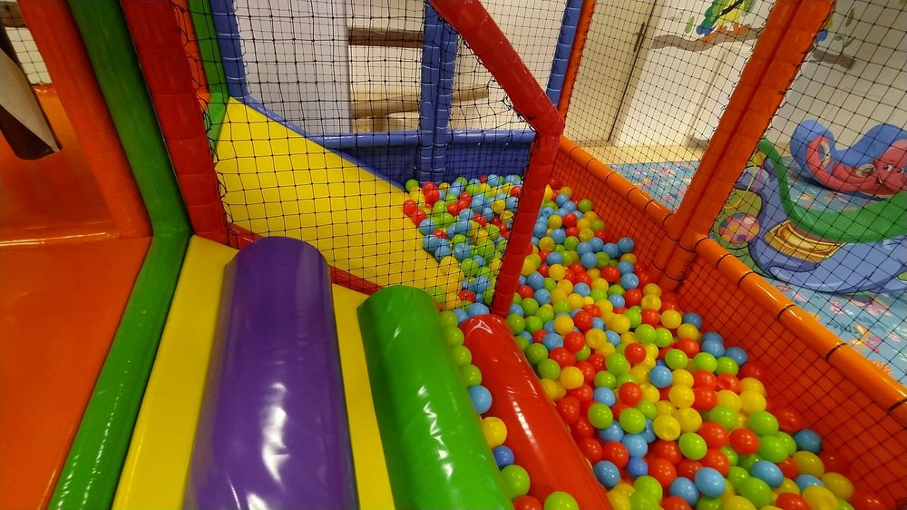
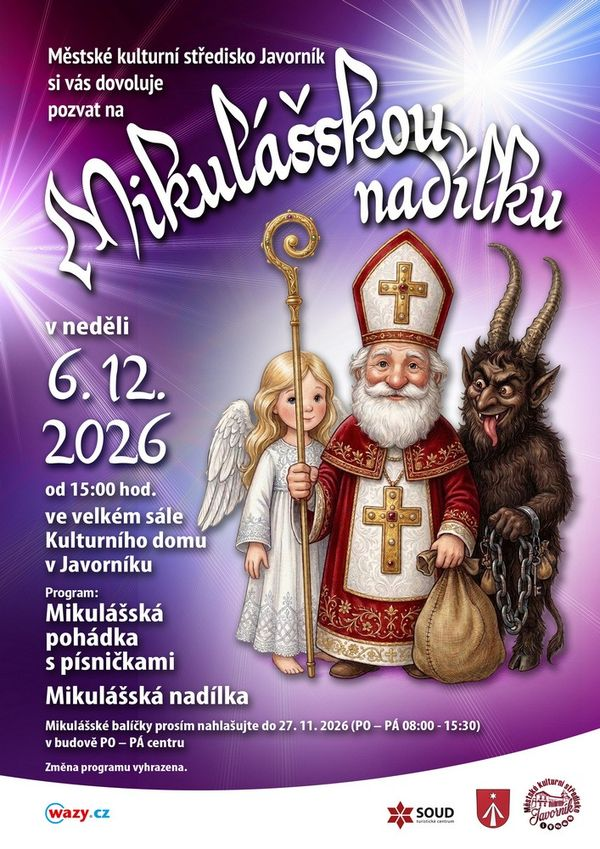
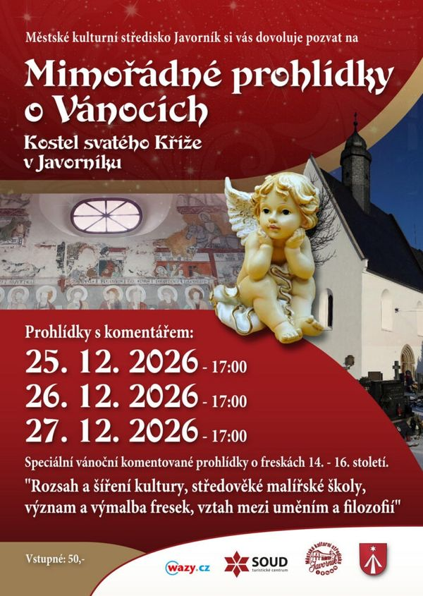
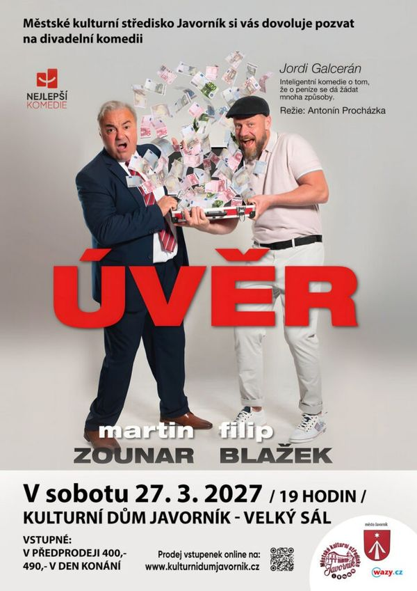
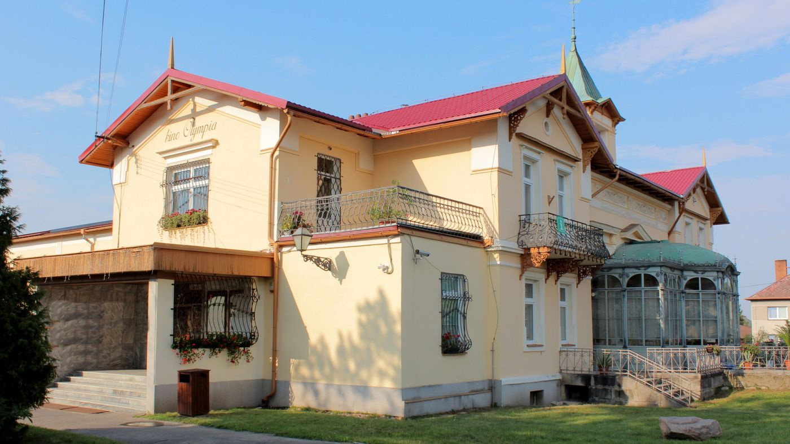
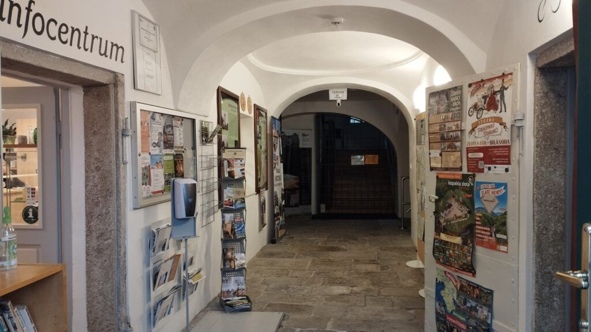

◎ Kostel sv. Kříže
Vánoční koncert
01/12 2026
01/12 2026


Kulturní dům, kino Olympia, knihovna, muzeum a turistické centrum Soud pod jednou střechou. Přijďte na koncert nebo do divadla, vezměte děti do herny, nebo si půjčte elektrokolo do Rychlebských hor.


Advent v Javorníku začíná 1. prosince koncertem v kostele sv. Kříže. Na co dalšího se můžete těšit: Mikuláš pro děti, Čechomor, Duo Jamaha a divadlo s Martinem Zounarem.





Pokladna otevírá 30 minut před začátkem představení. Vstupenky koupíte i online. Projekce pro školy na objednávku.


Máte blízko k filmu a technice? Ozvěte se nám.
Romantická vila z roku 1881, empírová budova bývalého zemského soudu a středověký kostel sv. Kříže. Kulturní dům je v Nádražní ulici, Soud v Puškinově.



V bývalé budově zemského soudu čp. 7 najdete městské informační centrum. Poradíme vám s ubytováním, občerstvením a tipy na výlet. Můžete si koupit suvenýry nebo vytisknout dokument.
Odpočívárna je pro výletníky: Wi-Fi, nabití telefonu, sprcha a WC. V letech 2021 a 2022 jsme získali 2. místo v anketě Oblíbené informační centrum Olomouckého kraje.
Chcete dostávat program akcí a kina e-mailem? Přihlaste se k odběru novinek.
Akce v okolí: Vánoce na zámku Jánský Vrch, Klamárium, Pradědovo dětské muzeum v Bludově.